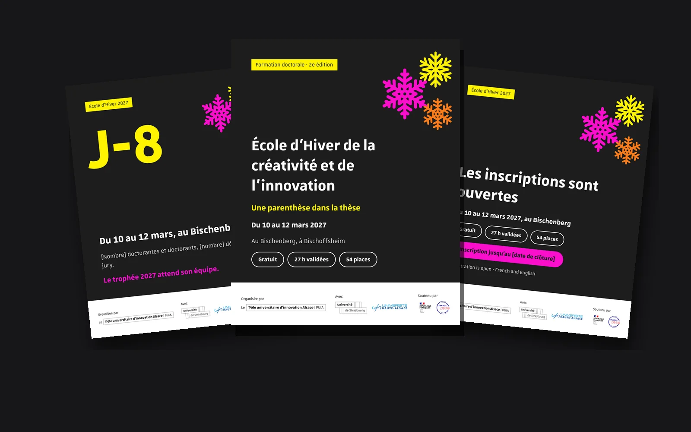
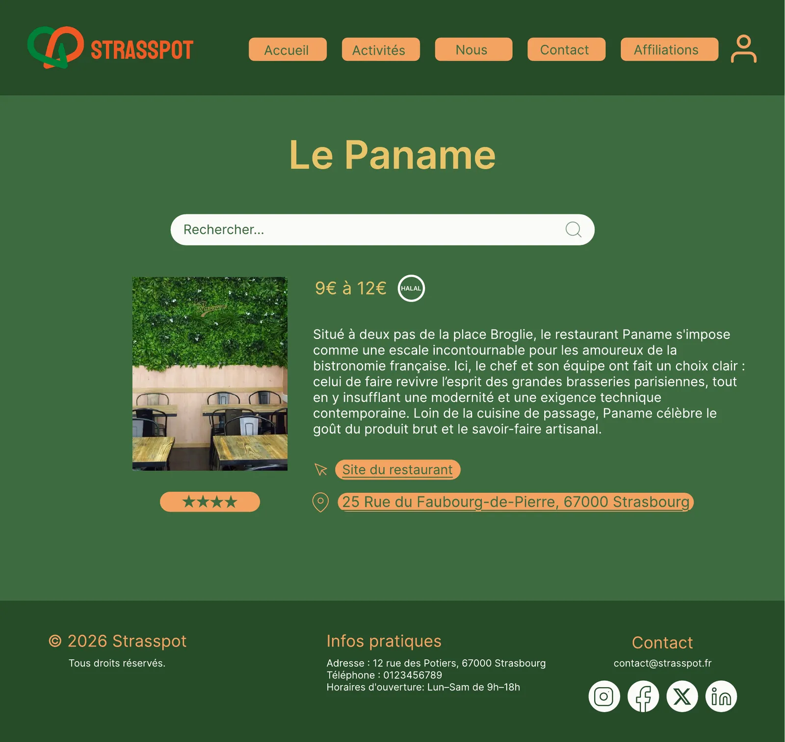
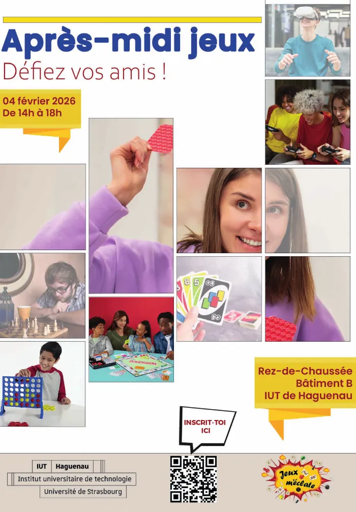
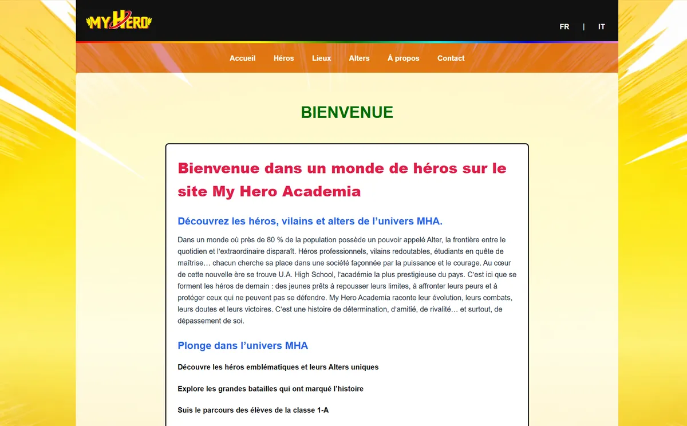
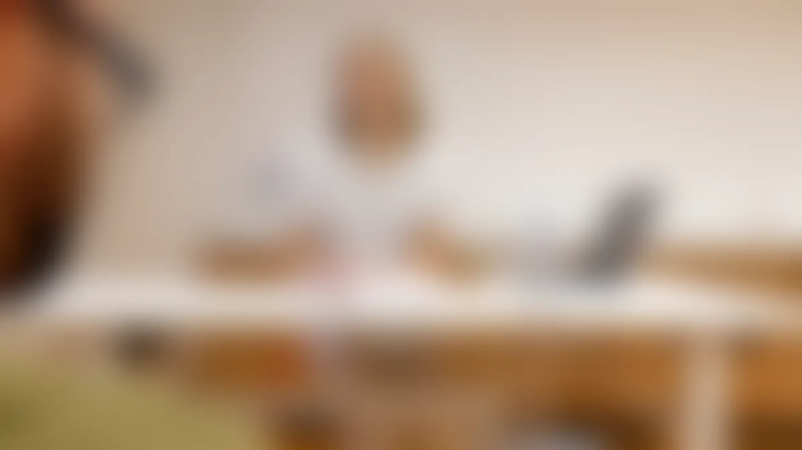

Disponible en stage du 12 avril au 25 juin 2027
Je transforme un tas de post-its en sites faciles à utiliser.
Étudiant en 2e année de BUT MMI à l’IUT de Haguenau, parcours UX design. J’écoute les utilisateurs, je teste mes idées avec eux, puis je conçois des interfaces claires.
- Cinéma
- Salle de sport
- Restaurant
- Parcs
- Bars
- Musée et exposition
- Menu à moins de 10 €
- Sport d’extérieur
- Théâtre
- Boîte de nuit
- Associations sportives
- Fast food
Projets
Cinq projets, dont un pour un vrai client. Pour chacun : ma démarche, mon rôle exact et ce que je referais autrement.
-

11 publicationsconçues pour un vrai client
École d’Hiver 2027
La communication d’un séminaire pour les doctorants d’Alsace, pour le Pôle universitaire d’innovation Alsace. J’ai piloté le projet, puis conçu la page web et les 11 publications LinkedIn.
-

6 testeurs4 problèmes repérés grâce aux tests
Strasspot
Un guide des bons plans à Strasbourg pour les étudiants. Des personas au tri de cartes, puis des tests avec 6 participants pour vérifier que le site se comprend sans aide.
-

3 écransDu wireframe au site responsive en ligne
ZooAtlas
Un guide du Parc zoologique et botanique de Mulhouse. Je l’ai conçu en wireframes sur trois tailles d’écran, puis codé seul en PHP et MySQL.
-

22 risquesAnticipés en tant que chef de projet
Les Veillées d’Antan
Un dîner immersif pour faire vivre le Musée alsacien de Haguenau. J’ai mené l’audit, la stratégie de communication trilingue et la coordination d’une équipe de 7.
-
Sorties culturelles dans le Bas-Rhin
Indice, base 100 en 2015. Source : INSEE.
−20 %de sorties culturelles : le point de départ de l’audit
Kult’Uhr
Comprendre le public d’un futur festival en Nord Alsace grâce aux données de l’INSEE, puis construire une recommandation de communication en trois langues.
Autres réalisations
Des projets plus courts, en graphisme, en vidéo et en développement.
-

Flyer « Après-midi jeux »
Flyer A5 recto verso pour l’association Jeux m’éclate. Photomontage sur Photoshop, export pour l’impression et pour le web.
-

Site My Hero Academia
Un site bilingue français et italien. Les pages sont générées avec Twig à partir de fichiers de données.
-

Court métrage « La consultation »
Un homme se rend à sa consultation dans un centre médico-psychologique. Tourné en équipe de 5 : j’étais à l’image, avec un cadrage pensé pour faire ressentir son stress. Le film aborde la santé mentale. Le film n’est pas diffusé ici et l’image est floutée : je n’ai pas le droit de montrer les personnes filmées.


À propos
Je m’appelle Aiman. J’étudie en BUT Métiers du Multimédia et de l’Internet à l’IUT de Haguenau, dans le parcours stratégie de communication numérique et design d’expérience.
J’ai choisi l’UX design parce qu’une interface qui paraît simple demande en réalité beaucoup de réflexion. J’aime partir de ce que font vraiment les gens, puis le traduire en écrans clairs. Je connais aussi les bases du code, ce qui m’aide à parler le même langage que les développeurs.
En dehors des cours, j’ai travaillé un été comme agent de propreté urbaine, dès 5 h du matin et en binôme. Une bonne école de ponctualité et de travail d’équipe.
Concevoir
- Figma
- Miro
- Photoshop
- Illustrator
Bases du code
- HTML et CSS
- PHP et Twig
- MySQL
Méthodes
- Personas
- Tri de cartes
- Tests utilisateurs
- Benchmark
Langues
- Italien (langue maternelle)
- Français (C2)
- Anglais (A2+)
Ma méthode : écouter, trier, maquetter, tester, recommencer.
Vous cherchez un stagiaire en UX/UI design ?
Écrivez-moi, je réponds rapidement. Mon CV détaille mes projets et mes disponibilités.
Adresse : aimanbelouanas@gmail.com